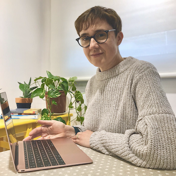

Susanna Tres Coca
Psicòloga general sanitària i psicoterapeuta
Consulta de psicologia a Barcelona (Eixample) i Sant Just Desvern · Atenció presencial i online
Col·legiada núm. 9196 (COPC) |
Acreditada per la FEAP i l’EFPA |
Membre titular de l'ACPP |
Membre de l'AETG

Ofereixo atenció psicològica a infants, adolescents, adults i famílies que busquen assessorament o tractament psicològic a Barcelona i Sant Just Desvern.
- Perspectiva psicodinàmica relacional.
- Integració de psicologia humanista i processament del trauma.
- Sensibilitat a problemàtiques socials i ambientals.
- Prevenció en salut mental amb xerrades i tallers.
Amb més de 25 anys d’experiència en l’àmbit clínic i educatiu.
Consulta de psicologia a Barcelona – Eixample
C/ Casanova 46, 4t 1a08011 Barcelona
Tel. 696 45 32 77
trescoca@gmail.com
Consulta de psicologia a Sant Just Desvern
Avinguda de la Indústria, 1108960 Sant Just Desvern, Barcelona
Tel. 696 45 32 77
trescoca@gmail.com